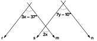

Assim como um imponente castelo precisa de uma base sólida para se manter erguido, a Geometria Plana depende de princípios fundamentais, sobre os quais está construída toda a sua fundamentação teórica, para se estabelecer. Teoremas sofisticados são provados através de teoremas simples, que, por sua vez, são provados por outros ainda mais simples em uma regressão que vai até as ideias matemáticas que não podem ser provadas por meio de cálculos ou de raciocínios lógicos: os axiomas.
Euclides de Alexandria, matemático grego conhecido como o “pai da Geometria”, escreveu aquele que foi, muito provavelmente, o livro de Matemática mais importante da história: Os elementos. Nessa obra, Euclides introduziu o método axiomático, em que um conjunto de proposições são admitidas como verdadeiras sem a necessidade de provar isto por meio de conceitos anteriores. Esses axiomas continham relações importantes de entes primitivos da Geometria: o ponto, a reta e o plano.
Neste capítulo, aprofundaremos as bases teóricas da Geometria Plana a fim de começarmos, pouco a pouco, a construir nosso grande castelo de conhecimento acerca dessa ciência.
- Quais são os exemplos cotidianos que transmitem as ideias de pontos, retas e planos?
- Que elementos geométricos simples podem ser definidos através desses entes primitivos?
Neste capítulo será abordada a competência EM13CHS103 e EM13CHS106.
Os entes primitivos
Assim como toda matéria é composta da combinação de átomos, as figuras geométricas são formadas por três elementos básicos, os quais chamamos de entes primitivos: pontos, retas e planos. Esses elementos não podem ser definidos por meio de outras figuras, embora possamos explicá-los com ideias intuitivas.
É importante destacarmos que esses três entes primitivos são abstrações humanas, sem existência real. Por exemplo, o ponto é uma entidade sem quaisquer dimensões físicas, enquanto a reta não apresenta largura. Apesar disso, os entes primitivos são úteis na representação de uma infinidade de modelos reais. As situações a seguir ilustram alguns deles.
Ponto
As estrelas que brilham no céu em uma noite escura são exemplos de pontos; no geral, para representá-los, são utilizadas as letras maiúsculas do nosso alfabeto. Vejamos, na figura, a identificação de três estrelas como sendo os pontos A, B e C.
Representação de estrelas como pontos.
Matsumoto/Shutterstock.com
Reta
As retas não possuem espessura e são formadas por uma infinidade de pontos alinhados. Todas as retas se estendem de modo infinito, fato que é representado graficamente por pequenas setas nas extremidades das linhas. Preferencialmente, as retas são simbolizadas por letras minúsculas do nosso alfabeto ou a partir de dois de seus pontos.
Reta r ou  .
.
PlanilAstro/Shutterstock.com
No exemplo a seguir, podemos observar a reta r  e notar que dois pontos distintos sempre determinam uma única
reta que passa por eles.
e notar que dois pontos distintos sempre determinam uma única
reta que passa por eles.
Plano
O plano é uma figura bidimensional, e podemos pensar nele como sendo a superfície de uma parede ou do tampo de uma mesa, mas que se estende infinitamente. Geralmente, é nomeado por meio de uma letra minúscula do alfabeto grego. A seguir, está representado o plano a.
Três pontos distintos e não alinhados são capazes de determinar um plano. Assim, o plano da figura apresentada pode ser chamado também de plano ABC.
Definições importantes
A partir da noção intuitiva de ponto, reta e plano, algumas outras ideias são definidas. Atenção às seguintes definições.
Pontos colineares
Conjunto de pontos em que é possível traçar uma única reta que passe simultaneamente por todos eles.
Pontos coplanares
São pontos que estão contidos em um mesmo plano determinado.
Interseção de figuras
Dizemos que duas figuras planas se intersectam quando elas possuem um ou mais pontos em comum; a interseção dessas figuras é o conjunto de todos esses pontos comuns. Vejamos alguns exemplos:
Entes definidos
Na Geometria, entes definidos são as figuras que podem ser definidas por meio dos entes primitivos e suas combinações. As figuras mais básicas são compostas apenas dos entes primitivos de ponto e reta. Por se tratar de figuras importantes, com as quais você deve se familiarizar, analisaremos separadamente cada uma delas.
Semirreta
Um ponto qualquer em uma reta a divide em dois conjuntos distintos de pontos conhecidos como semirretas. Por exemplo, na situação a seguir o ponto P divide a reta r em duas semirretas opostas.
Uma semirreta possui uma orientação definida. Observe os dois casos:
Para esta situação, temos:
Segmento de reta
Dados dois pontos A e B pertencentes a uma mesma reta r, define-se o
segmento de reta  como o conjunto de pontos
de r que pertencem ao intervalo de extremos A e B.
como o conjunto de pontos
de r que pertencem ao intervalo de extremos A e B.
Note que, diferentemente de uma reta, um segmento de reta possui um início e um fim e, portanto, um comprimento limitado.
A reta que contém um segmento de reta é chamada de reta suporte. Por exemplo, na figura anterior, a reta suporte do segmento é a reta r.
Agora, trataremos de uma classificação usual para segmentos de reta.
Os segmentos consecutivos são aqueles que possuem uma extremidade em comum,
como é o caso dos segmentos  , demonstrados a
seguir.
, demonstrados a
seguir.
Por fim, os segmentos adjacentes são aqueles que, ao mesmo tempo, são
consecutivos e colineares, como os segmentos  representados
a seguir.
representados
a seguir.
Já os segmentos colineares são aqueles que estão em uma mesma reta. Quaisquer dois segmentos tomados na seguinte imagem são colineares, por exemplo, .
Medida de um segmento
Os segmentos de reta podem ser medidos por uma grandeza chamada comprimento.
Este comprimento equivale à distância numérica entre os dois pontos extremos do segmento, e a
unidade em que a medida é realizada pode ser arbitrária (u.c., mm, cm, m etc.). Usualmente,
denotamos a medida de um segmento  como
ou simplesmente AB.
como
ou simplesmente AB.
Por exemplo, para os segmentos  colineares representados a seguir, tem-se que AB 5 3 cm e BC 5 4 cm.
colineares representados a seguir, tem-se que AB 5 3 cm e BC 5 4 cm.
Comprimentos de segmentos, assim como número reais, podem ser somados e
subtraídos. Neste caso, em que os segmentos são colineares, podemos calcular o comprimento do
segmento como  .
.
Ponto médio de segmento
Define-se o ponto médio M de um segmento  como o ponto que, pertencendo ao segmento, divide-o
em duas partes iguais, de modo que AM = MB (a medida do segmento é igual à medida do segmento ).
como o ponto que, pertencendo ao segmento, divide-o
em duas partes iguais, de modo que AM = MB (a medida do segmento é igual à medida do segmento ).
Todo segmento possui necessariamente um único ponto médio. Se dois segmentos possuem o mesmo comprimento, são denominados congruentes. Nesse caso, temos Ë (o segmento é congruente ao segmento ).
Ângulo
É uma figura formada por duas semirretas que possuem uma extremidade em comum, a qual é chamada de vértice do ângulo, enquanto as semirretas são os lados do ângulo. Um ângulo divide o plano em uma região interior e outra exterior ao próprio ângulo.
Um ângulo cujos lados são as semirretas  e
e  é definido
como ângulo .
é definido
como ângulo .
Passaremos agora a estudar vários aspectos da Geometria de ângulos.
Medidas de ângulos
Ângulos são usualmente medidos em graus (°), e, por meio de um simples transferidor escolar, é possível obter tais medidas com boa aproximação.
Para encontrarmos, com o auxílio de um transferidor, a medida de um ângulo
 , precisamos seguir alguns passos:
, precisamos seguir alguns passos:
1. Sobreponha o centro do instrumento no vértice do ângulo.
2. Alinhe um dos lados do ângulo de modo que este aponte para a medida 0 do transferidor.
3. Leia a medida de no
ponto em que o outro lado do ângulo aponta a escala do transferidor.
Podemos pensar em um transferidor como uma espécie de “régua” para ângulos.
Note que o modelo do transferidor acima representa metade de uma circunferência, o que
corresponde a um ângulo de 180°. Desse modo, um ângulo de 1° nada mais é que uma fração que
corresponde a  de uma semicircunferência.
de uma semicircunferência.
O legado de Pitágoras.
O documentário, disponível no YouTube em três partes, relaciona a elaboração dos conceitos elementares de Geometria com o desenvolvimento das civilizações da Antiguidade – notadamente babilônicos, egípcios e gregos.
Parte 1 disponível em: <http://p.p4ed.com/HGCHU>.
Parte 2 disponível em: <http://p.p4ed.com/HGCHI>.
Parte 3 disponível em: <http://p.p4ed.com/HGCHO>.
Reprodução
Assim como ocorre com os segmentos, as medidas de ângulos podem ser somadas ou subtraídas. Quando dois ângulos apresentam a mesma medida, dizemos que eles são congruentes.
1
A figura a seguir representa a medição de alguns ângulos com o auxílio de um transferidor. Determine os valores dos ângulos AÔF, BÔC, FÔH e CÔG.
Resolução:
Pelas medidas do transferidor, temos que:
med(AÔF)
med(FÔH)
med(CÔG)
Classificação dos ângulos
Os ângulos são usualmente classificados de acordo com as suas medidas. Sendo assim, denominamos ângulos agudos aqueles que possuem medidas positivas e inferiores a 90°.
Já os ângulos retos são aqueles que medem exatamente 90°. Neste caso, é comum ele ser indicado por meio de um pequeno quadrado no vértice do ângulo com um pontinho em seu centro, conforme a figura ao lado.
Os ângulos obtusos são aqueles que apresentam medidas maiores que 90° e menores que 180°.
Por fim, os ângulos rasos (ou de meia-volt são construídos a partir de duas semirretas opostas de mesma origem, medindo exatamente 180°.
Ângulos complementares e suplementares
Dois ângulos são chamados complementares quando a soma de suas medidas é 90°. Nessa situação, dizemos que um ângulo é o complementar do outro. Por exemplo, o ângulo complementar de 30° mede 60°, e o complementar de 80° mede 10°.De modo semelhante, dizemos que dois ângulos são suplementares quando as medidas somam 180°. Neste caso, um dos ângulos é o suplementar do outro. Desse modo, o suplementar de 30° mede 150°, enquanto o suplementar de 125° mede 55°.
2
Sabendo que o ângulo AÔC é reto, determine o valor de x

Resolução:
Como AÔC é reto, temos:
med(AÔC)
Assim, med(AÔC)
2x
3
Dado que t é uma reta, determine as medidas dos ângulos MÔN e NÔP.

Resolução:
O ângulo MÔP é raso, logo med(MÔP)
Como med(MÔN)
4x
Por fim, é possível calcular as medidas dos ângulos MÔN e NÔP.
med(MÔN)
med(NÔP)
4
Determine o ângulo cuja medida supera a de seu complementar em 12°.
Resolução:
Seja a o ângulo em questão, o complementar de medida α tem medida dada
por 90°
Desse modo, como α excede seu complementar em 12°, temos:
α
Portanto, o ângulo que supera o seu complementar em 12° é o ângulo que mede 51°.
5
A medida do suplementar do ângulo que mede x excede o dobro da medida do complementar de x em 28°. Determine x.
Resolução:
Primeiramente, vamos organizar as informações.
Medida do ângulo procurado: x
Medida do suplementar desse ângulo: 180°
Dobro da medida do complementar desse ângulo: 2 • (90°
Assim, pelas informações do enunciado:
(180°
x
Ângulos consecutivos e adjacentes
Dois ângulos são consecutivos quando possuem um lado em comum e são adjacentes quando são consecutivos e não possuem pontos internos em comum.
AÔB e BÔC são consecutivos ( é o lado
comum) e adjacentes. AÔB e AÔC são consecutivos (
é o lado
comum) e adjacentes. AÔB e AÔC são consecutivos ( é o lado
comum), mas não adjacentes.
é o lado
comum), mas não adjacentes.
Ângulos opostos pelo vértice
O cruzamento de duas retas concorrentes determina quatro ângulos. Observe a situação a seguir:
Note que os ângulos de medidas a, b, x e y possuem o vértice em comum. Além disso, esses ângulos se opõem dois a dois: dizemos que os ângulos de medidas a e b são opostos pelo vértice, assim como os ângulos de medidas x e y também o são.
Um teorema importante e que será usado com frequência diz que os ângulos opostos pelo vértice possuem a mesma medida. Ou seja, para a figura apresentada, temos que a 5 b e x 5 y.
A prova desse teorema é bastante simples. Note, por exemplo, a seguinte situação em que os ângulos que medem x e y são opostos pelo vértice.
Observe que os ângulos AÔB e CÔD são rasos. Assim:
med(AÔB) 5 180° ~ x 1 a 5 180° (I)
med(CÔD) 5 180° ~ y 1 a 5 180° (II)
Igualando as equações (I) e (II):
x 1 a 5 y 1 a ^ x 5 y
Portanto, ângulos opostos pelo vértice possuem medidas iguais.
6
Determine os valores de x e y.

Resolução:
Note que os ângulos de medidas 3y e 4y
3y
Como os ângulos de medidas 2x
2x
Portanto, x
Bissetriz
Define-se como bissetriz de um ângulo a semirreta que divide o ângulo ao meio, ou seja, em duas partes de mesma medida.
Na situação da figura, note que a semirreta  tem origem em O, ponto que é o vértice do ângulo AÔC. Além
disso, os ângulos AÔB e BÔC são congruentes. Portanto, dizemos que
tem origem em O, ponto que é o vértice do ângulo AÔC. Além
disso, os ângulos AÔB e BÔC são congruentes. Portanto, dizemos que  é a bissetriz do ângulo AOC.
é a bissetriz do ângulo AOC.
Por questões de facilidade de representação, é comum que pares de ângulos congruentes sejam representados por pequenos traços iguais nas marcas curvas próximas aos seus vértices. Por exemplo, na figura ao lado, o ângulo NÔP é congruente ao ângulo PÔQ, enquanto MÔN é congruente a QÔR
7
Nas situações a seguir, a semirreta  é bissetriz do ângulo AÔC. Determine os valores das
variáveis em cada um dos itens a seguir.
é bissetriz do ângulo AÔC. Determine os valores das
variáveis em cada um dos itens a seguir.


Resolução:
-
Como é bissetriz do ângulo AÔC, então med(AÔB)
= med(BÔC). Assim:3x
= 5x– 24° → x= 12° -
Como AÔB e BÔC são congruentes:
x
+ 20°= y– 10° → x= y– 30° (I)Note que o ângulo AÔD é raso. Assim:
y
– 10°+ x+ 20°+ x+ 2y= 180° → 3y+ 2x= 170° (II)Substituindo (I) em (II):
3y
+ 2(y– 30°)= 170° → 5y= 230° → y= 46°Por (I):
x
= y– 30°= 46°– 30°= 16°Portanto, x
= 16° e y= 46°.
8
Os ângulos adjacentes AÔB, BÔC e CÔD são tais que med(AÔB)
Resolução:
Sejam  as bissetrizes dos ângulos
AÔC e BÔD respectivamente. A figura a seguir traz a situação descrita.
as bissetrizes dos ângulos
AÔC e BÔD respectivamente. A figura a seguir traz a situação descrita.
Como é bissetriz de AÔC: 22°
Adicionando as equações (I) e (II):
2x
Retas paralelas e retas concorrentes
Duas retas pertencentes ao mesmo plano são ditas paralelas quando não possuem nenhum ponto em comum ou quando são coincidentes.
Retas paralelas não coincidentes
Retas paralelas coincidentes.
Marccophoto/iStockphoto.com
Geralmente, é usada a notação r || s para indicar que a reta r é paralela à reta s.
Marccophoto/iStockphoto.com
Ao contrário das retas paralelas, as retas concorrentes são aquelas que possuem exatamente um ponto em comum. Na figura a seguir, as retas r e s são concorrentes e se intersectam no ponto P.
Neste caso, r ∩ s = {P}.
Um caso particular de retas concorrentes são as retas perpendiculares, as quais se cortam formando ângulos de 90°.
Retas r e s perpendiculares entre si.
É comum que se use a notação r ⟂ s para indicar que estas retas são perpendiculares entre si.
Retas paralelas cortadas por uma transversal
Quando retas paralelas são analisadas isoladamente, pouco podemos afirmar sobre elas, conforme é possível verificar a seguir.
Agora observe a mesma figura, com o acréscimo de mais uma reta, que intersecta o par de retas paralelas
Note que, de acordo com a definição, as retas cortadas pela transversal não precisam ser paralelas.
Dessa maneira, a situação se torna mais complexa, pois vários ângulos são formados com o acréscimo de uma reta transversal - nome dado justamente por cortar duas ou mais retas (ou segmentos de retas, ou semirretas) que estejam em um mesmo plano, intersectando cada uma delas em um ponto diferente. Observe a figura ao lado, em que as retas r e s são paralelas

Ângulos alternos internos são congruentes.
Os pares de ângulos de medidas a e x, b e z, c e y, d e w são correspondentes;
Os pares de ângulos de medidas a e y, b e w são alternos externos.
Em relação às retas paralelas cortadas por uma transversal, é necessário sabermos que os ângulos alternos são congruentes. No exemplo a seguir, em que r e s são paralelas, temos que a 5 b, pois são ângulos alternos.Desse modo, analisando a seguinte situação, concluímos que pares de ângulos correspondentes possuem a mesma medida. Além disso, é importante lembrarmos que ângulos opostos pelo vértice também são congruentes.

Ângulos correspondentes congruentes: r//s.
Essa propriedade também é utilizada para provar se duas retas são ou não paralelas: se duas retas cortadas por uma transversal tiverem ângulos correspondentes congruentes, elas são paralelas; se não tiverem, são concorrentes.
Ângulos correspondentes distintos: r e s concorrentes.
10
Sabendo que as retas


Resolução:
-
Note que os ângulos de medidas 2x+20° e x+30° são alternos internos, enquanto os ângulos de medidas 2x+20° e y+5° são opostos pelo vértice. Desse modo, os três ângulos são congruentes entre si.
Vamos obter o valor de x:
2x+20°=x+30° ⇒ x=10°
Por fim, vamos obter o valor de y:
y+5°=2x+20° ⇒ y=2 ∙ 10°+15° ⇒ y=35°
-
Neste caso, para que se apresente de forma mais explícita a propriedade das retas paralelas cortadas por uma transversal, traçaremos uma reta paralela às retas r e s e que passe pelo ponto B. Observe a nova situação.
Os ângulos de medidas 42° e α são alternos internos, assim como os de medidas 26° e b. Portanto, α =42° e b=26°.Por fim, z= +b ⇒ z=42°+26°=68°.
-
Assim como no exemplo anterior, traçaremos uma reta paralela auxiliar de modo a construir ângulos alternos internos, conforme mostrado na figura.
2a+3a+10°=7a - 20° ⇒ 2a=30° ⇒ a=15°
1
Classifique, de acordo com a tabela a seguir, cada par de segmentos como adjacentes, consecutivos ou colineares. Lembre-se de que um mesmo par de segmentos pode ter mais de uma classificação.

| Segmentos | Consecutivos | Colineares | Adjacentes |
|---|---|---|---|
| SIM | NÃO | NÃO | |
2
Se M é o ponto médio de  ,
determine a medida
,
determine a medida
3
Observe, a seguir, a planta de um estacionamento em que as linhas demarcadoras das vagas representam segmentos de retas.
Youst/iStockphoto.com
Sobre os ângulos que esses segmentos de reta das figuras fazem entre si, é correto afirmar que:
- há ângulos agudos, retos e obtusos.
- há apenas ângulos retos.
- há apenas ângulos agudos.
- há apenas ângulos obtusos.
- há ângulos agudos e obtusos, mas não retos.
4
No mapa a seguir, a rua das Margaridas forma um ângulo de 131° com rua das Rosas. Além disso, a rua das Rosas forma um ângulo de 62° com a rua das Flores.
Com essas informações, determine o ângulo que a rua das Margaridas forma com a rua das Flores.
5
A rosa dos ventos aponta as direções noroeste (NO), nordeste (NE), sudeste (SE) e sudoeste (SO).
Com base na imagem e em seus conhecimentos geográficos, identifique qual das opções a seguir representa duas direções que determinam o menor dos ângulos possíveis em uma rosa dos ventos.
- Norte e nordeste.
- Sul e oeste.
- Sudeste e sudoeste.
- Norte e sudeste.
- Nordeste e sudoeste.
6
Dada a imagem a seguir da lateral de um caixote, determine as medidas x e y dos ângulos indicados.
7
Dado que o ângulo AÔB é reto, calcule o valor da variável x.
7
A medida de um ângulo é cinco vezes maior que a medida de seu complementar. Determine a medida de seu ângulo suplementar.
1
Julgue as afirmativas a seguir como verdadeiras (V) ou falsas (F).
- ( ) Uma reta é completamente definida por apenas um de seus pontos.
- ( ) Três pontos não colineares determinam três retas distintas.
- ( ) Três pontos distintos não alinhados determinam um plano.
- ( ) Se duas retas são coplanares, então são paralelas.
- ( ) A interseção de dois planos distintos pode ser um único ponto.
2
Sobre a classificação de segmentos, julgue as afirmativas a seguir como verdadeiras (V) ou falsas (F).
- ( ) Dois segmentos consecutivos sempre são colineares.
- ( ) Dois segmentos colineares sempre são consecutivos.
- ( ) Dois segmentos adjacentes sempre são consecutivos.
- ( ) Dois segmentos adjacentes sempre são colineares.
- ( ) Dois segmentos colineares sempre são adjacentes.
3
Os pontos A, B e C estão dispostos nesta ordem em uma reta r. Se  mede o quíntuplo de , determine a medida de
mede o quíntuplo de , determine a medida de
4
Se M é o ponto médio de  , determine a sua medida em cada
uma das situações a seguir.
, determine a sua medida em cada
uma das situações a seguir.
5
Os segmentos são adjacentes, e seus respectivos pontos
médios são M e N. Se B está entre os pontos A e C e MN
6
Os pontos A, B e C, representados a seguir, são colineares. Sabe-se que 2 · AC=3 · AB e que BC=12 cm. Determine a medida do segmento .
7
Considere a figura a seguir.
É correto afirmar que é obtuso o ângulo
- AÔB
- BÔC
- CÔD
- BÔD
- AÔC
8
A partir da imagem, determine as medidas dos ângulos XÔY, XÔW e YÔW.
9
Se é bissetriz do ângulo MÔN, determine a medida de MÔP.
10
Determine o valor das variáveis x e y.
11
A medida da diferença de dois ângulos suplementares é de 46°. Determine a medida do complementar do menor deles.
12
Três quintos do suplementar de um ângulo α é igual a três meios do complementar de α. Determine a diferença entre o suplementar e o complementar de α.
13
IFCE Sabendo-se que a soma de dois ângulos é 78° e um deles vale do complemento do outro, os valores são:
- 10° e 68°
- 15° e 63°
- 16° e 62°
- 18° e 60°
- 20° e 58°
14
Determine os valores dos ângulos desconhecidos da figura a seguir.
15
Na figura, as retas r,s e t são paralelas, bem como duas das transversais que cortam essas retas. Determine o valor de x,y,w e z.

16
Na situação ilustrada a seguir, as retas r,s,t e m se cortam no ponto O.
Determine, em função de x e y, a medida dos ângulos:
- BÔC.
- FÔE.
- HÔC.
17
Os ângulos MÔP e NÔQ, representados na imagem, são retos
Prove que:
- med(MÔN)=med(PÔQ).
- MÔQ e NÔP são suplementares.
18
Dado na figura que o ângulo MÔP mede 130° e as semirretas são bissetrizes de MÔN e NÔP, respectivamente, determine a medida do ângulo AÔB.
19
Dadas as situações a seguir, determine a medida das variáveis apresentadas.
-
é bissetriz de MÔN.

-
é bissetriz de AÔB.
-
 é bissetriz de ZÔY.
é bissetriz de ZÔY.
-
 é bissetriz de AÔB e de CÔD.
é bissetriz de AÔB e de CÔD.
20
Seja α o ângulo suplementar de x+y+z. Determine a medida do ângulo suplementar α (x+y+z).
21
FGV Na figura, os pontos A e B estão no mesmo plano que contém as retas paralelas r e s.
Assinale o valor de α.
- 30°
- 50°
- 40°
- 70°
- 60°
22
Fuvest-SP Na figura, as retas r e s são paralelas, o ângulo 1 mede 45°, e o ângulo 2 mede 55°. A medida, em graus, do ângulo 3 é:
Assinale o valor de α.
- 50
- 55
- 60
- 80
- 100
23
IFPE Júlia começou a estudar Geometria na sua escola. Com dúvida em um exercício passado pelo professor de Matemática, ela pediu ajuda ao seu tio. O enunciado era: “As retas r e s são paralelas; as retas u e t, duas transversais. Encontre o valor do ângulo x na figura abaixo”. Portanto, o valor de x é:
Assinale o valor de α.
- 120°
- 125°
- 130°
- 135°
- 140°
24
AFA-SP Sejam r e s retas paralelas. A medida do ângulo α, na figura abaixo, é
Assinale o valor de α.
- 115°
- 125°
- 135°
- 145°
25
Mackenzie-SP Na figura abaixo, a e b são retas paralelas.
A afirmação correta a respeito do número que expressa, em graus, a medida do ângulo α é
- um número primo maior que 23.
- um número ímpar.
- um múltiplo de 4.
- um divisor de 60.
- um múltiplo comum entre 5 e 7.
26
Na situação a seguir, as retas r e s são paralelas. Determine o valor de y + x.
27
Na figura a seguir, as semirretas são bissetrizes dos ângulos AÔB e BÔC respectivamente. Prove que o ângulo MÔN mede 90°.
28
Utilizando as propriedades de retas paralelas cortadas por uma transversal, determine o valor das incógnitas em cada um dos itens a seguir.
A afirmação correta a respeito do número que expressa, em graus, a medida do ângulo α é
-
r || s e m || n

29
UFMG Observe esta figura:
Nessa figura, os pontos F, A e B estão em uma reta e as retas CB e ED são
paralelas. Assim sendo, o ângulo  mede
mede
- 39°
- 44°
- 47°
- 48°
30
Dadas as retas r e s paralelas, determine a medida do ângulo x na figura.
31
Na situação a seguir, em que as retas r e s são paralelas, sabe-se que a+b=44°. Dessa maneira, determine o valor de x+y.
31
Os pontos A, B, C e D são distintos e colineares que se sucedem nesta mesma ordem em uma reta. Se M e N
são os pontos médios de  , respectivamente, prove que
, respectivamente, prove que
Superação
Na figura a seguir, todos os pontos são colineares. Sabe-se que M é ponto médio
de  e N é ponto médio de
e N é ponto médio de  . Se AC+DB=40 cm, determine a distância entre os pontos
médios de
. Se AC+DB=40 cm, determine a distância entre os pontos
médios de

Seção olímpica
1
OBM Três quadrados são colocados pelos seus vértices entre si e dois bastões verticais, como mostra a figura. Qual a medida do ângulo x
- 39°
- 41°
- 43°
- 44°
- 46°
1
Enem 2018 A rosa dos ventos é uma figura que representa oito sentidos, que dividem o círculo em partes iguais.
Uma câmera de vigilância está fixada no teto de um shopping e sua lente pode ser direcionada remotamente, através de um controlador, para qualquer sentido. A lente da câmera está apontada inicialmente no sentido Oeste e o seu controlador efetua três mudanças consecutivas, a saber:
- 1a mudança: 135° no sentido anti-horário;
- 2a mudança: 60° no sentido horário;
- 3a mudança: 45° no sentido anti-horário.
Após a 3a mudança, ele é orientado a reposicionar a câmera, com a menor amplitude possível, no sentido Noroeste (NO) devido a um movimento suspeito de um cliente.
Qual mudança de sentido o controlador deve efetuar para reposicionar a câmera?
- 75° no sentido horário.
- 105° no sentido anti-horário.
- 120° no sentido anti-horário.
- 135° no sentido anti-horário.
- 165° no sentido horário.
2
Enem 2017 A imagem apresentada na figura é uma cópia em preto e branco da tela quadrada intitulada O peixe, de Marcos Pinto, que foi colocada em uma parede para exposição e fixada nos pontos A e B.
Por um problema na fixação de um dos pontos, a tela se desprendeu, girando rente à parede. Após o giro, ela ficou posicionada como ilustrado na figura, formando um ângulo de 45° com a linha do horizonte
Para recolocar a tela na sua posição original, deve-se girá-la, rente à parede, no menor ângulo possível inferior a 360°.
A forma de recolocar a tela na posição original, obedecendo ao que foi estabelecido, é girando-a em um ângulo de
- 90° no sentido horário.
- 135° no sentido horário.
- 180° no sentido anti-horário.
- 270° no sentido anti-horário.
- 315° no sentido horário.
3
Enem 2016 Uma família resolveu comprar um imóvel num bairro cujas ruas estão representadas na figura. As ruas com nomes de letras são paralelas entre si e perpendiculares às ruas identificadas com números. Todos os quarteirões são quadrados, com as mesmas medidas, e todas as ruas têm a mesma largura, permitindo caminhar somente nas direções vertical e horizontal. Desconsidere a largura das ruas.

A família pretende que esse imóvel tenha a mesma distância de percurso até o local de trabalho da mãe, localizado na rua 6 com a rua E, o consultório do pai, na rua 2 com a rua E, e a escola das crianças, na rua 4 com a rua A.
Com base nesses dados, o imóvel que atende as pretensões da família deverá ser localizado no encontro das ruas
- 3 e C.
- 4 e C.
- 4 e D.
- 4 e E.
- 5 e C.
4
Enem Rotas aéreas são como pontes que ligam cidades, estados ou países. O mapa a seguir mostra os estados brasileiros e a localização de algumas capitais identificadas pelos números. Considere que a direção seguida por um avião AI que partiu de Brasília - DF, sem escalas, para Belém, no Pará, seja um segmento de reta com extremidades em DF e em 4.
Mapa do Brasil e algumas capitais

SIQUEIRA, S. Brasil Regiões. Disponível em: www.santiagosiqueira.pro.br. Acesso em: 28 jul. 2009 (adaptado).
Suponha que um passageiro de nome Carlos pegou um avião AII, que seguiu a direção que forma um ângulo de 135 graus no sentido horário com a rota Brasília - Belém e pousou em alguma das capitais brasileiras. Ao desembarcar, Carlos fez uma conexão e embarcou em um avião AIII, que seguiu a direção que forma um ângulo reto, no sentido anti-horário, com a direção seguida pelo avião AII ao partir de Brasília-DF. Considerando que a direção seguida por um avião é sempre dada pela semirreta com origem na cidade de partida e que passa pela cidade destino do avião, pela descrição dada, o passageiro Carlos fez uma conexão em
- Belo Horizonte, e em seguida embarcou para Curitiba.
- Belo Horizonte, e em seguida embarcou para Salvador.
- Boa Vista, e em seguida embarcou para Porto Velho.
- Goiânia, e em seguida embarcou para o Rio de Janeiro.
- Goiânia, e em seguida embarcou para Manaus.